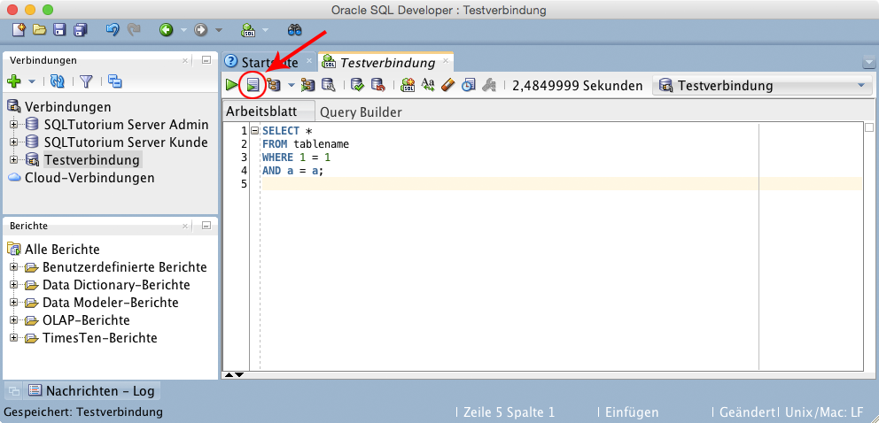
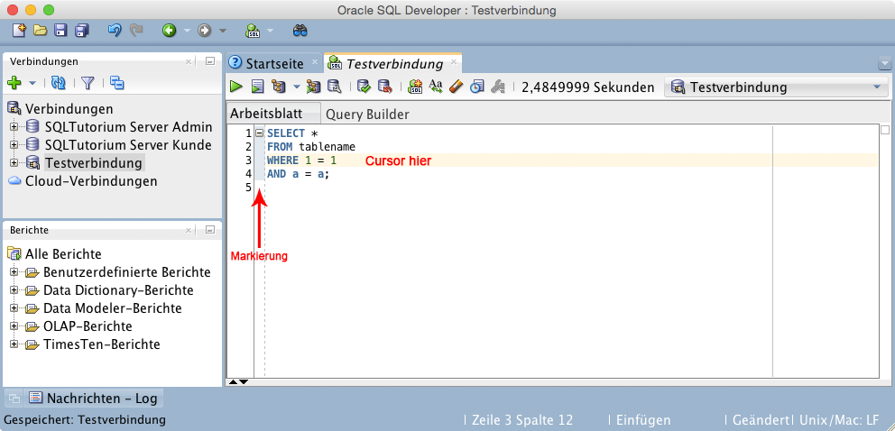

SQL Befehle ausführen¶
Im Developer können Befehle unterschiedlich ausgeführt werden:
Alle Befehle / Gesamtes Skript ausführen¶
Um alle SQL-Statements des Dokumentes bzw. das gesamte Skript auszuführen, kann einfach die “F5”-Taste gedrückt oder der “Skript ausführen”-Button gedrückt werden:

SQL Developer - Gesamtes Skript ausführen
Einzelnen Befehl ausführen¶
Um einen einzelnes SQL-Statement auszuführen reicht es, wenn der Cursor in dem entsprechendem SQL-Statement ist und Strg+Eingabe (Windows, MAC: ctrl+Eingabe) gedrückt wird. Somit läuft nicht immer das gesamte Skript durch, stattdessen können einzenle Befehle schnell ausgeführt und getestet werden.

SQL Developer - Einzelnes SQL-Statement ausführen